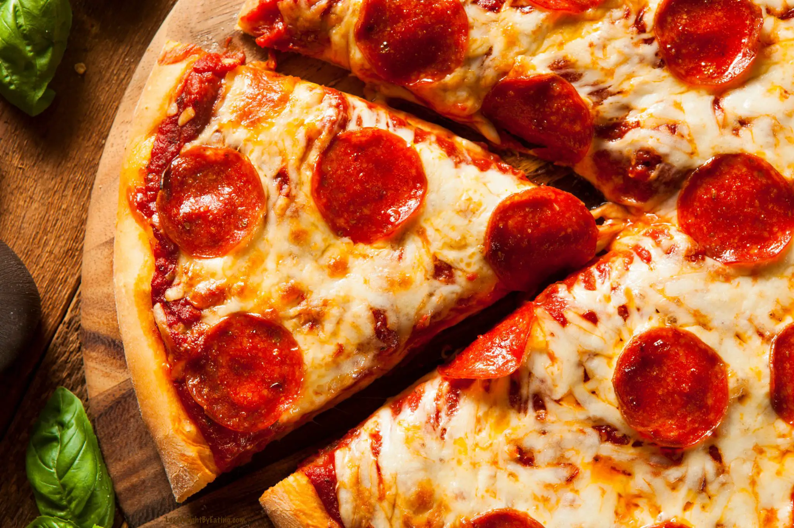

Pizza
Return Home

Description
This is a recipe for a low calorie pizza! Everyone loves pizza, especially
one where you can eat the whole thing in one sitting! Look no further then
this low calorie pizza recipe for all your pizza needs!
Ingredients
Pizza Sauce
- 1 (15-oz) can can tomato sauce
- 1 (6-oz.) can tomato paste
- 3 tablespoons fresh basil or Italian Seasoning
- 3 garlic cloves
- 1/4 teaspoon salt
- 1/4 teaspoon pepper
Pizza Dough
- 2/3 cup self rising flour
- 2/3 cup 0% Greek yogurt
- 1/4 teaspoon garlic salt
- 1 teaspoon Italian seasonings
Steps
-
Preheat the oven to 400 degrees, and set out a pizza tray or baking
sheet.
-
In a medium bowl, combine the pizza sauce ingredients and mix well. Set
aside to marinate.
-
In a mixing bowl, add the flour, yogurt, garlic salt and Italian
seasonings and mix until combined.
- Form into a ball of dough.
-
Lay a piece of parchment paper out on the countertop (it should be the
size of the pizza tray you set out).
-
Place the dough in the center of the parchment paper. Top the dough with
a little flour and a second piece of parchment paper.
-
Use a rolling pin to roll it out. It will be about 1/4 inch thick.
-
Move the pizza dough to the pizza tray, and remove the top layer of
parchment paper.
-
Spread the sauce over the pizza crust. And add your desired toppings.
-
Transfer the pizza into the oven and bake for 10-12 minutes, when the
crust is golden it’s done. Remove the pizza from the oven and slice into
eight slices.